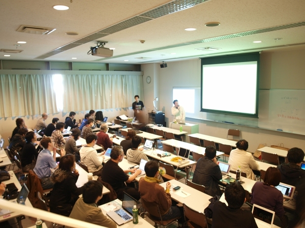
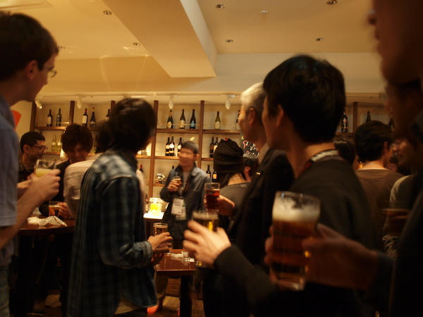
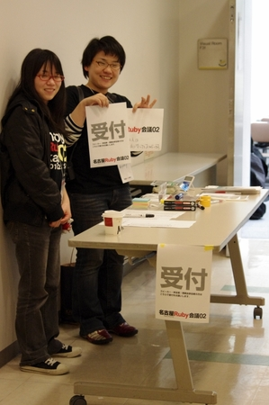

RegionalRubyKaigi レポート (20) 名古屋 Ruby 会議 02
RegionalRubyKaigi レポート (20) 名古屋 Ruby 会議 02
はじめに
: 
2011 年 02 月 26 日 (土) に 13 ヶ月ぶり 2 回目となる名古屋 Ruby 会議 02 が開催されました。今回は地域色の強い名古屋 (東海地方) っぽい Ruby 会議をテーマに企画を進めました。準備段階ではなぜか併催イベントである名古屋 Reject 会議のほうが先に発表者が埋まるというスタートになりましたが、最終的には多くの地元の方に発表していただくこともでき、参加者も予定を上回る応募があるなど、第 1 回より東海地方での Ruby の注目度の上昇を感じる地域 Ruby 会議となりました。
開催概要
- 日時
- 2011/02/26 (土) 13:00 - 17:35
- 場所
- トライデントコンピュータ専門学校
- 主催
- 名古屋 Ruby 会議実行委員会 / Ruby 東海
- 後援
- 日本 Ruby の会
- 公式HP
- http://regional.rubykaigi.org/nagoya02
協賛、協力
本イベントは、以下の皆様に協賛、協力を頂きました。
協賛
協力
(敬称略)
公式サイトデザイン及び、T シャツデザイン
公式サイトデザインと T シャツデザインは @hrstd にデザインして頂きました。
プログラム
: 
13:00-13:10 オープニング
- 発表者
- マツモトサトシ <名古屋 Ruby 会議 02 実行委員長>
名古屋 Ruby 会議 02 の開会挨拶、協賛・協力紹介が行われました。
13:10-13:35 「Coq to Ruby による証明駆動開発」
: 
- 発表者
- @mzp - CSNagoya
- 資料
証明駆動開発とはなにかということをプログラミング言語 Coq を使い Base64 エンコーディングライブラリの例を使って解説。そしてさらに Coq を拡張し Coq のコードを Ruby に変換するという驚きのハックを紹介して頂きました。
しかし名古屋在住のプログラマなら週に一度は証明の話を耳にするのですが、僕は何年たっても一向にわかる気配がありません。
13:35-13:55 「Enumerable はもっと Enumerable になれると思うんだ」
- 発表者
- @antimon2
- コード
自作の遅延評価ライブラリ enumerable_lz の紹介とデモを行っていただきました。すでにある遅延評価ライブラリより優れた点がいくつもあるとの事です。素数を列挙する速度はとてもライブでやっているとは思えないものでした。
13:55-14:15 「侵略！Redmine 〜 Redmine プラグイン開発入門 〜」
プロジェクト管理システム Redmine のプラグインの仕組みがどうなっているのかということと、プラグインの開発はどのようにするのかという丁寧な解説でした。プラグインのスケルトンの作り方から始まり、どういうときにフックされるのかなど、これからプラグイン開発をしようと思っている人には凝縮された貴重な情報盛りだくさんでした。
14:15-14:25 休憩
14:25-14:45 「Git ことはじめ」
- 発表者
- @bleis-tift
Git の導入方法から merge の方法などを Git に関する発表。しかし単なる Git の使い方ではなく Git の概念から始まりリポジトリツリーの解説など中身を理解してよくわかる Git の解説でした。Git のコマンドは多くて最初嫌なのですが、こういうところから理解を始めると一つ一つのコマンドの意味がよくわかり頭に入りやすいなと思いました。
14:45-15:00 「Rhodes で行うスマートフォンアプリの作成」
- 発表者
- @the_haigo
Ruby と HTML で各種スマートフォンのネイティブアプリが作れるアプリケーションフレームワーク Rhodes の紹介とデモ。iOS や Android だけでなく BlackBerry や Windows Mobile などにも対応しているというのが面白い。ちなみに @the_haigo さんはまだ大学生でこれが初めての発表。すばらしい挑戦です。
15:00-15:30 「CGI を高速化する小手先テクニック」
: 
CGI を高速化する小手先のテクニックだけを紹介。ライブラリを必要なときにだけ読み込むというような内容まではよくわかりましたが、中盤からはセッション ID の取り扱いが遅いから自力で生成するだとか、テンポラリファイルを別パーティションにつくるのは無駄といったネタなんじゃないかと思えるような本物の小手先のテクニックが次々と登場。しかし単なるおまじないとしてではなく実際のベンチマークと共に披露され私たちを驚かせてくれました。
最後にあった「あなたのコードが遅いのはあなた自身のせいであって、Rubyのせいではない」という言葉はとても心に響きました。
15:30-16:00 Lightning Talks
: 
- Ruby 中級者への道 @suchi
- Ruby 初心者から抜き出るにはということで発表者が取り組んだ方法を紹介。いろいろ模索した結果、脱初心者にはフルコースということで最初から最後まで読んだ何冊もの本を紹介していただきました。@suchi は決して (というか全く) 初心者ではないのですがそれでも逆引き本も最初から最後まで読む、時間がないならトイレでも読むという姿勢に背筋が伸びました。
- http://www.slideshare.net/suchi/ruby02-ltruby
- 猫でもできる Rails デプロイ @toyoshi
- 私自信の発表。Arduino というマイコンボードのようなものを使ってセンサーに手をかざすと Rails のデプロイスクリプトが動くという仕組みを作ったという発表です。Arduino は Ruby でもコードが書けますし、驚くほど簡単にやりたいことができるので興味のある人は是非試してみてください。
- http://www.jamboree.jp/cms/archives/999
- 名古屋 Ruby 会議 02 Lightning talks (仮) @issm
- 名古屋の Perl コミュニティ「名古屋で Perl をゆるく語る会」と「Nagoya.pm」の紹介。そして @issm が共著でだされた「Web サイト制作者のための JavaScript 入門講座」の紹介をして頂きました。LT の内容以上に、あの自作のプレゼンツールはなんだったんだと注目をあつめていました。
- Ruby で SNMP を勉強してみました ネコギギ
- ネットワーク上の機器を監視・制御するためのプロトコル SNMP を Ruby のライブラリを利用して使ってみたという発表。初めての発表で緊張されたということでしたが、普段関わることの少ないネットワークの話が Ruby を使うことでわかりやすく伝えられており面白かったです。
- Ruby によるスプリットテスト Patrick McKenzie
- ご自身で開発されている Rails プラグイン A/Bingo を使ったスプリットテスト (A/B test) のお話。A/Bingo を使うことでユーザをグループに分け、Web サイトの見栄えや文章、さらには商品の価格までを分けてスプリットテストができるということで、実際にいままで使われてきた実績とともに紹介していただきました。商品の価格を少し上げてテストしてみても売上が変わらなかったなど実体験に基づいた発表はとても興味深かったです。
16:00-16:30 休憩
16:30-16:45 「Ruby で作る図形描画 DSL」
- 発表者
- 松田 邦仁久
- 資料
Ruby で PostScript 用の DSL を作り、図形描画を簡単にしたというお話。もともとは冗長な書き方が必要だった PostScript の図形描画が見事に Ruby らしく簡潔にかけるようになっていました。最終的には DSL とは従来のものでは表現できなかったものを表現できるようにすることといういい感じの結論にいたったのはずがそこから何故か発展しギャル語も日本語の DSL だという独自の結論で締めくくられました。
16:45-17:00 「メタプログラミング Perl」
- 発表者
- @clairvy
- 資料
他の言語を知ることが大切だという主張から Perl のほうから出張してくださった clairvy さん。たんなる Perl の紹介かと思いきやメタプログラミング Ruby の内容を Perl でやったらどうなるかという発表です。正直なところ Perl 大変そうだなと思いましたが、それゆえに Perl の知識はもちろんのこと Ruby のことも深く知らないとできないこの内容を発表する clairvy さんはすごいと思いました。 後日、著者の Paolo さんからもコメントを頂きました (http://twitter.com/#!/kdmsnr/status/41448391502204928)) 。
oh, he took inspiration from the book’s structure. nice :) if you’re in touch with him, tell him a “thank you” from my side
17:00-17:30 「子曰く、故きを温ねて、新しきを知れば、以って師と為るべし」
- 発表者
- 伊藤 浩一 - 株式会社永和システムマネジメント
- 資料
伊藤さんのキャリアを辿りながら、それまでに得てきたものをオブジェクト指向や Ruby、アジャイルといったキーワードで紹介していただきました。流暢な喋りで盛り上げるプレゼンとはまた違う魅力があり、スライドが一枚進むごとにぐいぐいとメッセージが伝わってきて胸がいっぱいになっていくのを感じました。なんというか伊藤さんの確実にこつこつと経験を積み上げてきた自信と、その経験による太くまっすぐな背骨が見えるようなトリに相応しい心が動く発表でした。
17:30-17:35 クロージング
動画
動画が一部 Ustream にて見ることができます。
http://www.ustream.tv/channel/%E5%90%8D%E5%8F%A4%E5%B1%8Bruby%E4%BC%9A%E8%AD%B002
併催イベント
: 
『Ruby は Perl、Python、Smalltalk、Eiffel など多数の言語に受けた言語です。なので、他の言語の話をすることは未来の Ruby にとってとても大事なことです』と思ってしまった人たちが集まり、名古屋 Reject 会議というイベントが同フロアで開催されました。内容は関数型言語を中心に普通ではなかなか聞けない濃い話で盛り上がったようです。
http://partake.in/events/47ccda3b-82d2-4f89-aa83-395a26545b62
アンケート結果
: 
参加者の方にアンケートに協力して頂きました (有効回答数 26) 。
以下、集計結果の概要です。
参加者の年齢層は、20-29 歳が 35% 、30-39 歳が 46% で、この年代で全体の約 8 割を占めました。
お住まいは名古屋市内が 46% で東海地方以外の方は 8% でした。把握している範囲では北は北海道、南は島根からお越しいただいています。
本イベントを知った経路は、Ruby 関連の HP や ML で 23% で、前回はその他に入っていた Twitter が 23% で大きく増えていました。
また今回懇親会を Paypal での支払い限定にするということをしたのですが、それに関しては「便利、普通」が 77% 、「面倒、Paypal 支払いのため参加できなかった」という方が 4% (1 票) でした。オンラインでの決済には抵抗があるという方もいると思いますが、懇親会の開催が負担になって開催をやめてしまうぐらいであれば先払いで事前に人数が確定できるこの方法はよいと思いました。
おわりに
: 
当日は当初の受付人数を超える 60 名以上の参加があり、盛況のうちにイベントを終えることができました。実行委員の立場としては多くの東海地方のスピーカーを迎えることができ、初めての発表の挑戦の場としても使ってもらえたことや、喫茶自由や併設イベントなどの新しい試みができたことに満足しています。
アンケートなどから頂いたみなさまのフィードバックをもとに、次回ももっと楽しい地域 Ruby 会議を開催出来ればと思います。
最後になりましたが、今回のイベントが無事開催できたのは参加者の皆様、協賛、協力、後援頂いた皆様、そして実行委員の皆様のおかげです。本当にありがとうございました。
書いた人
豊吉隆一郎 ( http:://www.jamboree.jp/ )
走るのが大好きなフリーランスのプログラマ。名古屋で CSNagoya という勉強会を @dominion525 と共同で運営しています。